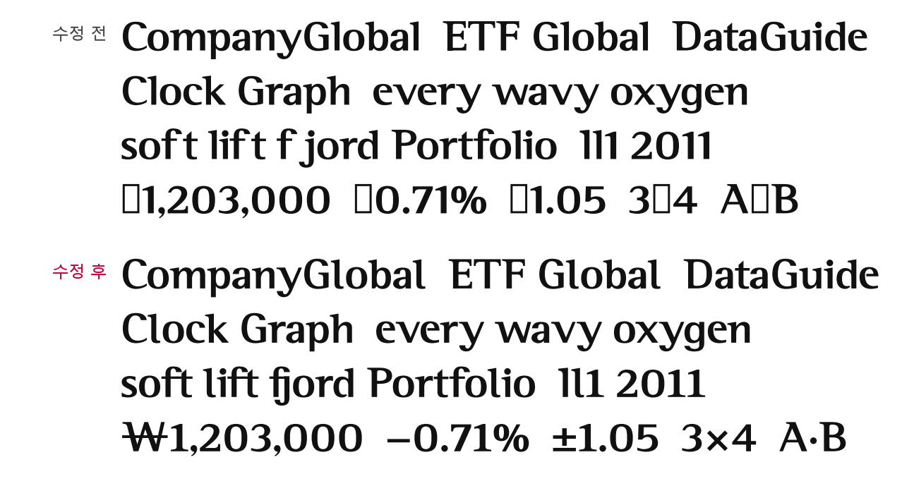
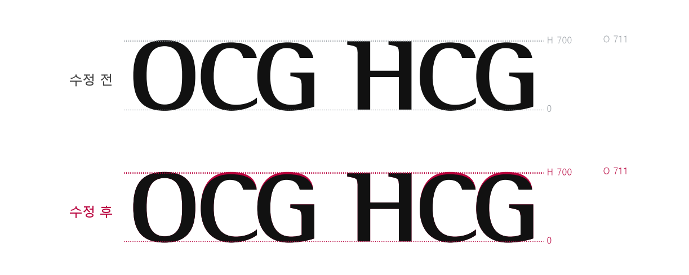
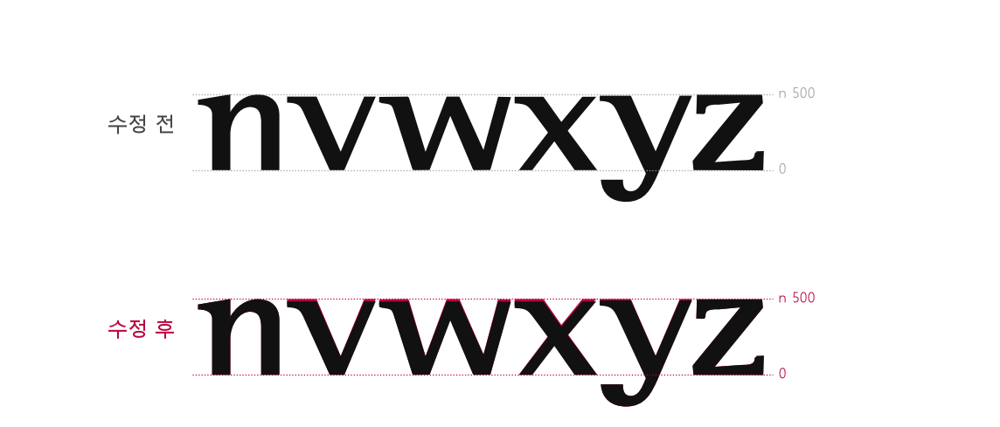
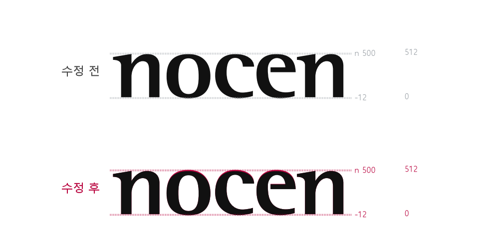
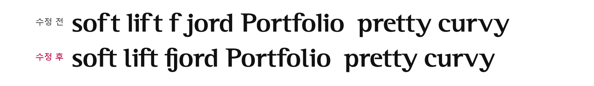
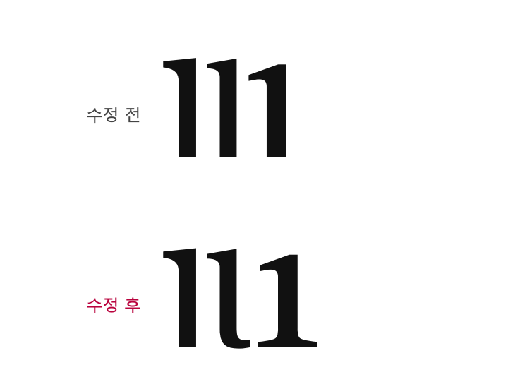
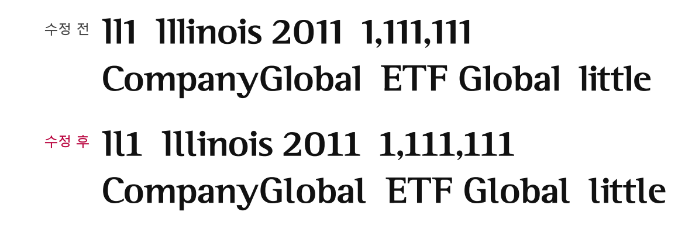
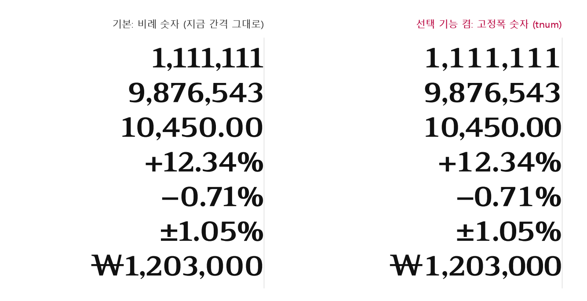
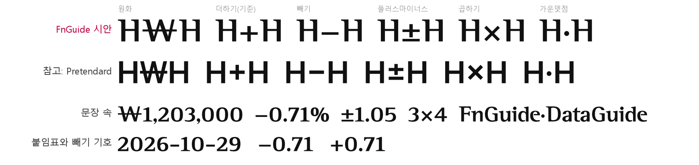

"수정 후"는 서체 파일을 고치지 않고 그림 위에서만 글자 윤곽을 바꿔 그린 시안입니다. 실제 서체에 넣기 전에 디자이너가 곡선과 획 굵기를 다듬어야 합니다. 서체가 사내 전용이므로 이 문서는 내부에서만 봐 주세요.
| 항목 | 수정 전 | 수정 후 |
|---|---|---|
| ① C·G 높이 | 윗부분 688 (O 711보다 23 낮음) | 711 — O와 같게 |
| ② v·w·x·y 높이 | v·w 485, x 484, y 491 | 500 — n과 같게 |
| ③ o·c·e 위쪽 넘침 | 0 (위 498) | +12 (위 512) — 아래 −12와 같게 |
| ④ f 다음 간격 | ft +43, fj +71, ty +29, rv +29 벌림 | ft·fj 이어 쓰기 글자, ty·rv 0 |
| ⑤ 파일 설정 | Windows 위쪽 높이 850, Regular 표시 없음 | 870, Regular 표시 |
| ⑥ 1·I·l 구분 | 1·l 모두 깃발만 있는 막대 | 1에 받침, l에 꼬리 |
| ⑨ 숫자·기호 | 비례 숫자만, 금융 기호 없음 | 고정폭 숫자 선택 기능, ₩ − ± × · 추가 |

둥근 대문자 O는 윗부분이 711인데, 같은 둥근 글자인 C·G는 688이라 네모 글자 H(700)보다도 낮았습니다. 윗부분만 23 올려 O와 맞췄습니다. 맨 위 곡선은 통째로 올려 획 굵기는 그대로입니다.

v·w는 485, x는 484, y는 491로 다른 소문자(n 500)보다 낮았습니다. 모두 500으로 올렸습니다. y의 아래 꼬리는 그대로입니다.

둥근 소문자는 아래로만 12 넘치고 위쪽은 넘치지 않아(위 498) 네모 글자보다 작아 보였습니다. 위쪽도 512까지 넘치게 해 아래와 같은 만큼 맞췄습니다.


그림에는 보이지 않는 서체 파일 안의 값입니다.
| 항목 | 수정 전 | 수정 후 | 이유 |
|---|---|---|---|
| Windows용 위쪽 높이 값 | 850 | 870 | 가장 큰 글자 '|'가 863이라, 850이면 Windows에서 위끝이 잘릴 수 있습니다. |
| Regular 표시 값 | 비어 있음 | Regular | 일부 프로그램의 굵기 목록에서 생기는 오류를 막습니다. |
수정 전에는 I, l, 1이 모두 깃발만 있는 막대라 "Il1"이 "111"처럼 읽혔습니다. 1에는 받침을, l에는 꼬리를 붙여 셋이 모두 구분됩니다. I는 그대로입니다.


기본 숫자는 지금처럼 글자마다 폭이 다른 비례 숫자로 둡니다. 표에서만 고정폭 숫자를 선택 기능으로 켭니다. 웹은 font-variant-numeric: tabular-nums 한 줄로 켭니다. 기능을 켜면 숫자 0~9와 + − ±가 모두 같은 폭(600)이 되어 자리가 맞습니다.

| 기호 | 모양 |
|---|---|
| ₩ 원화 | W 가운데에 가로획 한 줄 (Pretendard 방식). 가로획 굵기는 이 서체 대문자 가로획과 같은 65. 사선 밖으로 왼쪽 184, 오른쪽 150 나감 |
| − 빼기 | + 너비의 0.98배(536). 해외 서체 5종의 비율(0.97~1.00) 가운데값. 굵기·높이는 + 가로획과 같음. 붙임표(-)보다 길어 날짜와 구분됨 |
| ± 플러스마이너스 | + 를 조금 올리고 아래에 같은 두께의 가로줄 |
| × 곱하기 | + 크기의 약 0.95배(492 네모). 획 굵기는 + 가로획(81)과 세로획(108) 사이인 94 |
| · 가운뎃점 | 마침표를 + 가운데 높이로 올림 |
